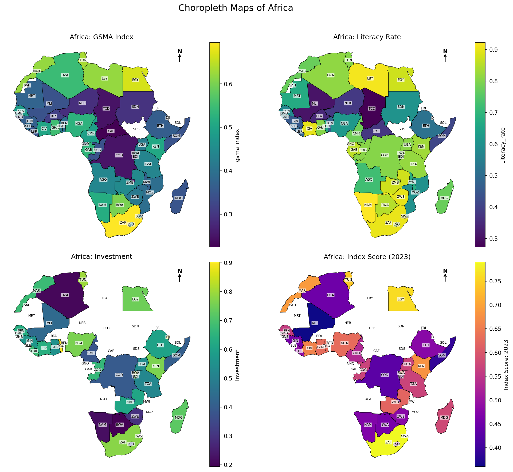

Fintech Index Africa (FINIA)
FINIA is a data-driven index designed to track and benchmark fintech performance across Sub-Saharan Africa. It aggregates data from multiple sources and provides key insights into the regional fintech ecosystem. This project represents a comprehensive analysis of digital development and financial investment across African countries, integrating multiple development indicators to create a holistic understanding of the continent's digital landscape. The analysis spans from 2010 to 2024 and emphasizes major investment hubs like Nigeria, South Africa, Egypt, and Kenya.
Data Collection and Processing
Investment data from Crunchbase includes funding rounds, industries, and locations, showing wide disparities in funding across the continent. Nigeria tops the list with over $3.5B by 2024. Countries like Seychelles, Mauritius, and Togo, while smaller, show focused investment interest.
Key Development Indicators
- GSMA Mobile Connectivity Index: Covers infrastructure, affordability, readiness, and content availability. Top performers include South Africa, Mauritius, Egypt.
- Literacy Rates: Proxy for digital readiness. Seychelles and South Africa show rates above 90%, while Chad and Niger remain below 40%.
Dashboard Preview
The FINIA index is a composite score derived from various metrics, including investment volume, GSMA scores, and literacy rates. It provides a comprehensive view of the fintech landscape in Sub-Saharan Africa.
Composite Index Development
A normalized, composite index combines investment volumes, GSMA scores, and literacy rates to produce a balanced score for each country. In 2023, scores ranged from 0.36 (Mali) to 0.84 (Seychelles), revealing clear links between investment, infrastructure, and education.
Choropleth Maps Countries Performance on Sub-Indices and The Fintech Index Itself
Insights & Policy Relevance
FINIA provides insights for governments, investors, and NGOs to identify digital investment gaps and development needs. The post-COVID-19 era marks a sharp rise in digital investment—most notably in Nigeria, Egypt, and South Africa. This project helps visualize the link between financial capital and digital outcomes.
Explore the Code
Access the source code and methodology on GitHub →